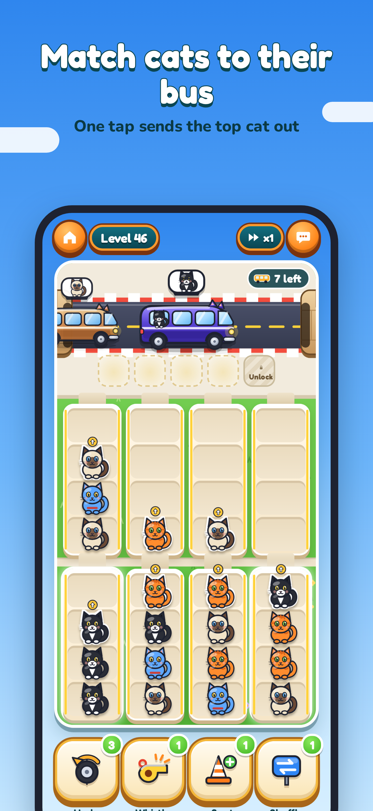
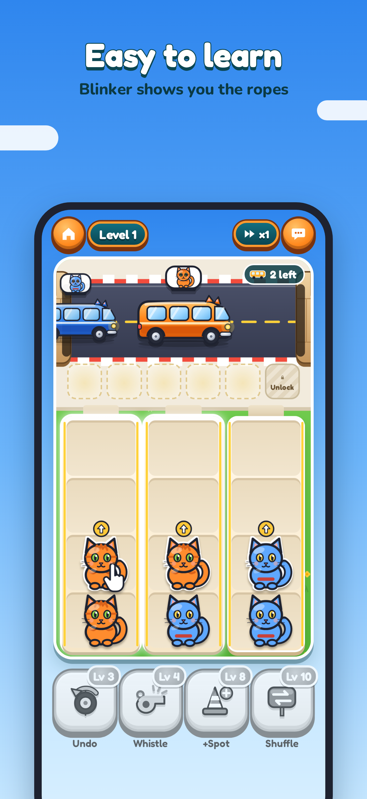
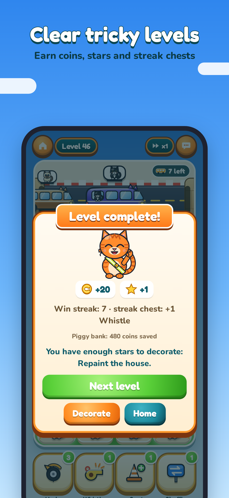
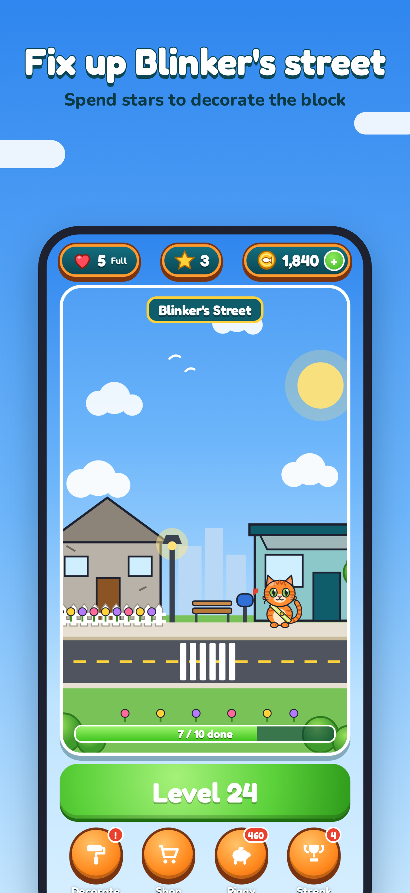
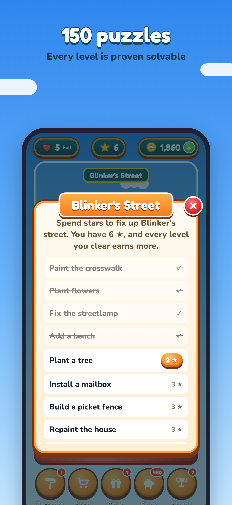

A one-tap cat bus sorting puzzle starring Blinker, the orange tabby crossing guard.
Buses pull up one at a time, each waiting for one kind of cat. Tap a driveway to send its top cat out. Match it to the bus, fill three seats, and clear the street before the curb fills up. 150 puzzles, every one proven solvable.





Questions? See Support or email chieflyappsupport@anchorforged.com.